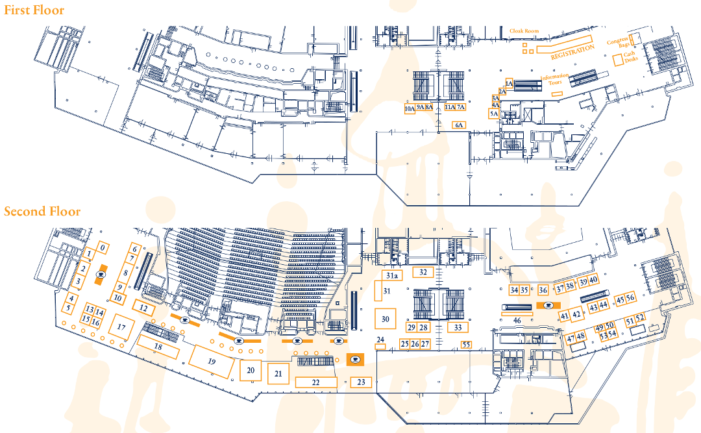

1A - International Federation of Oto-Rhino-Laryngological Societies (IFOS)
2A - Georges Portmann Institute
3A - Albanian Society of ORL-HNS
4A - 4th Congress of European ORL-HNS
5A - JP Medical Publishers
6A - The Royal College of Otolaryngologists – Head and Neck Surgeons of Thailand
7A - 8th Instructional Workshop European Academy of Otology & Neuro-Otology (EAONO)
8A - European Board Examination Oto-Rhino-Laryngology-Head and Neck Surgery (EBEORL)
9A - Ewopharma spol. s r.o.
10A - International Federation of Head and Neck Oncologic Societies (IFHNOS)
11A - Union of the European Phoniatricians (UEP)
0 - OPTOMIC ESPAŇA S.A.
1 - Dr. LANGER MEDICAL GmbH
2 - Leica Mikrosysteme Vertrieb GmbH
3 - ATOS MEDICAl AB
4 - Sutter Medizintechnik GmbH
5 - FENTEX medical GmbH
6 - G. Heinemann Medizintechnik GmbH
7 - Fiagon AG Medical Technology
8 - RICHARD WOLF GmbH
9 - IGEA S.p.A.
10 - Tristel Solutions Limited
12 - Lumenis GmbH
13 - IBSA Institut Biochimique SA
14 - Atmos Medizin Tecnik GmbH & Co. KG
15 - Mediplast AB
16 - Heinz Kurz GmbH Medizintechnik
17 - MED-EL Medical Electronics
18 - SPIGGLE & THEIS Medizintechnik GmbH
19 - OLYMPUS EUROPA SE & Co.KG
20 - Cochlear AG
21 - Karl Storz GmbH & Co.KG
22 - Medtronic Internatonal Trading Sarl
23 - Carl Zeiss Meditec AG
24 - INNOFORCE SIA
25 - HAPPERSBERGER OTOPRONT GmbH
26 - Auris Medical AG
27 - Bien-Air-Surgery SA
28 - Merz Pharmaceuticals GmbH
29 - Servona GmbH
30 - Cook Medical Europe Ltd.
31 - ARRI Medical
31a - XION GmbH
32 - Brainlab Sales GmbH
33 - Entellus Medical Inc.
34 - BrilliENT, LLC
35 - PENTAX Europe GmbH
36 - SinuSys Corp
37 - PHACON GmbH
38 - Andreas Fahl Medizintechnik-Vertrieb GmbH
39 - GN Otometrics A/S
40 - Grace Medical, Inc.
41 - GlaxoSmithKlein, s.r.o.
42 - Smith & Nephew
43 - MEDI-CARE SOLUTIONS S.R.L.
44 - Boehring Ingelheim RCV GmbH & Co KG
45 - SpiroMedical
46 - Wisepress Ltd
47 - Karger Publishers
48 - Xoran Technologies LLC
49 - Dr. KIM Co.
50 - Romet Electronic larynx
51 - SOREDEX
52 - Ono & Co., Ltd.
53 - Saegeling Medizintechnik s.r.o.
54 - Pinpoint Scotland Ltd
55 - Medtmaging Integrated Solution Inc.
56 - Jull Surg
ground floor - Auto Zrucký/Dealer Nissan
